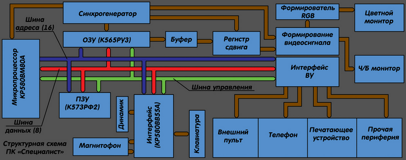
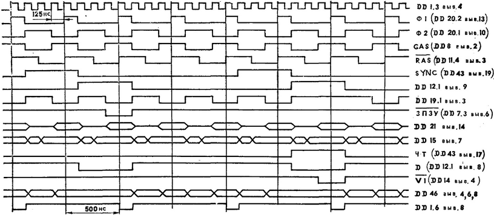
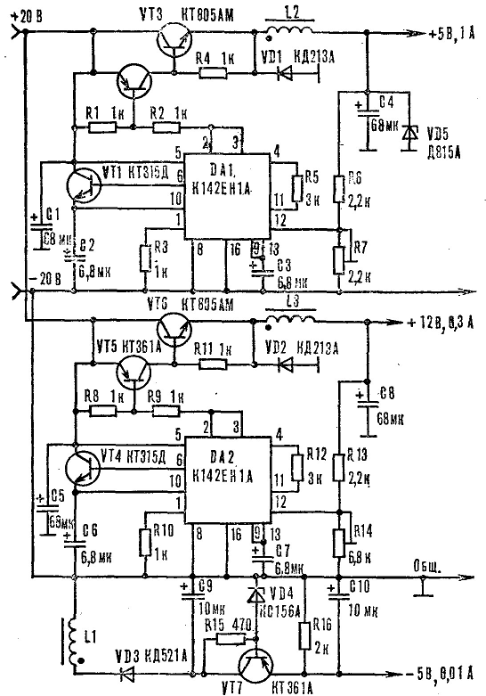
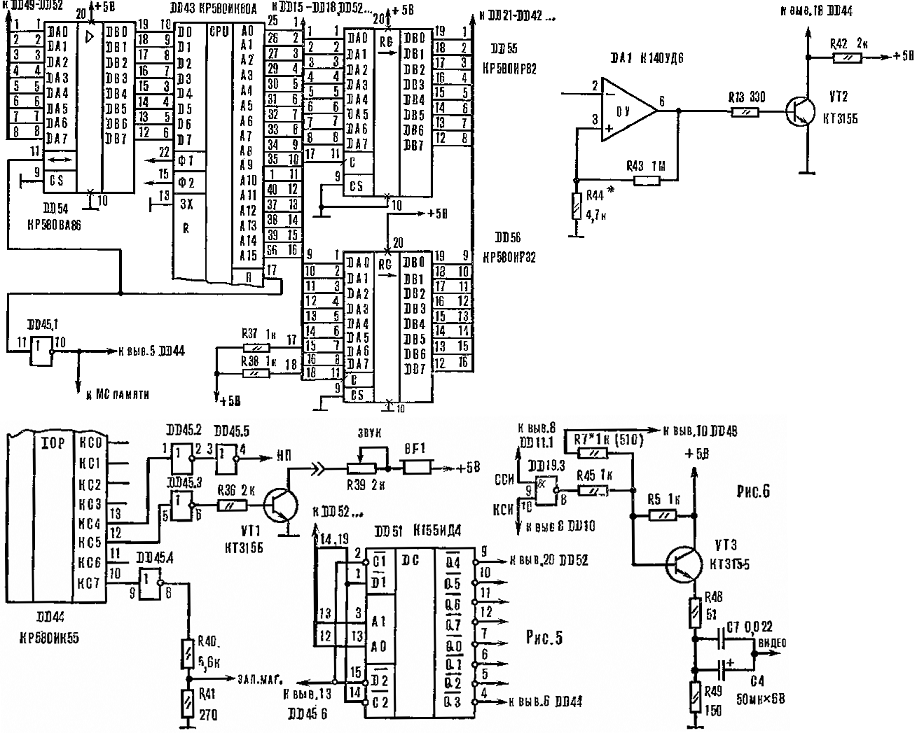
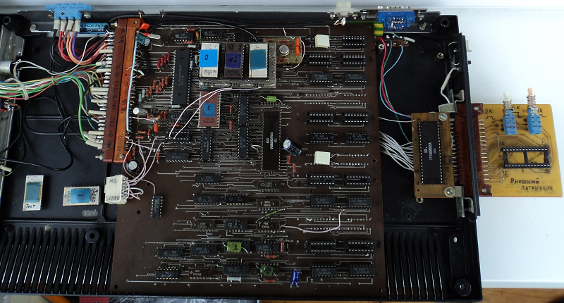
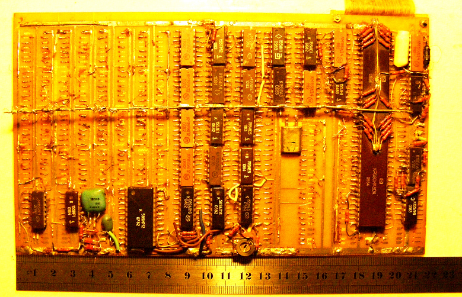

www.spetsialist-mx.ru
САЙТ О ПК "СПЕЦИАЛИСТ" И ЕГО КЛОНАХ
| |
|
| ГЛАВНАЯ | |
| МИКРОПРОЦЕССОР | |
| СИНХРОГЕНЕРАТОР | |
| ПАМЯТЬ | |
| ИНТЕРФЕЙС | |
| КЛОНЫ | |
| ПРОГРАММЫ | |
| ИГРЫ | |
| СПЕЦИАЛИСТ МХ | |
| ПЛИС | |
| ССЫЛКИ | |
| ОБРАТНАЯ СВЯЗЬ |
В 1985 г. Анатолием Федоровичем Волковым из г. Днепродзержинска был разработан первый в стране графический любительский компьютер "Фахiвець - 85". Компьютер имел ОЗУ 48 кБайт, ПЗУ от 2 до 14 кБайт, внешние устройства в области памяти и главное - графический экран 384 на 256 точек, а также цвет.
ТЕХНИЧЕСКИЕ ХАРАКТЕРИСТИКИ
Одноплатный персональный компьютер "Специалист" состоит из микропроцессора, постоянного запоминающего устройства (ПЗУ) объёмом 2...12 кБайт (К573РФ2) и оперативного запоминающего устройства (ОЗУ) объёмом 32 / 48 кБайт (К565РУЗ), интерфейса для связи с внешними устройствами и клавиатурой и синхрогенератора. Основные узлы (см. схему) взаимодействуют между собой посредством трёх шин: 16 - разрядной адреса и 8 - разрядных данных и управления. Микропроцессор (К580ВМ80) тактируется импульсами частотой 2 МГц, вырабатываемыми синхрогенератором.
{kind=link}

Для упрощения конструкции интерфейс (К580ВВ55) и внешнее устройство адресуются как ячейки памяти. Функции синхрогенератора, счётчика регенерации ОЗУ и счётчика сканирования дисплея совмещены в одном устройстве, что позволило значительно упростить схему компьютера и обойтись без специальных БИС. Цикл регенерации ОЗУ - 128 мкс. Для отображения информации на экране телевизора используется часть основной памяти ЭВМ.
Для получения полного телевизионного сигнала в формирователе видеосигнала смешиваются импульсы, снимаемые со сдвигового регистра, с импульсами, вырабатываемыми синхрогенератором. Период строчной синхронизации - 64 мкс., длительность строчного гасящего импульса - 16 мкс., период кадровой развертки - 20 мс., длительность кадрового гасящего импульса - 3584 мкс.
Временная диаграмма сигналов в различных узлах компьютера представленна ниже.

Блок питания. Питается компьютер от стабилизатора напряжения со следующими выходными данными: +12 В / 0,3 А; +5 В / 1 А; -5 В / 0,01 А. Дроссели L2, L3 намотаны на сердечнике Ш 7 х 7 из феррита марки 2000НМ, с зазором 0,15 мм и содержат по 40 витков провода ПЭВ 0,4. Обмотка дросселя L1 состоит из 60 витков провода ПЭВ 0,15, намотанного на одном сердечнике с L2.

Принципиальная схема ПК "Специалист" Волкова представлена на рисунке (схема кликтабельна).
Доработки. Прежде всего необходимо выполнить буферирование шины данных и адресной шины микропроцессора DD43. А поскольку эти шины имеют различное назначение, потребуется два различных типа буферов. Для шины данных подойдет специальный буфер на микросхеме DD54 К580ВА86, с возможностью реверсирования потока данных или аналогичный узел на двух К589АП16. Причем вывод 11 DD54 заведен на вывод 17 микропроцессора DD43. В момент, когда DD43 считывает информацию с шины данных, на выводе 17 появляется логическая 1, а при выдаче данных - логический 0. Адресная шина буферируется восьмиразрядными регистрами К580ИР82 (DD55, DD56). Буферирование шин микропроцессора гарантирует его устойчивую работу, позволяет подключать к шинам дополнительные устройства или микросхемы, например, дешифраторы. Все это существенно расширяет возможности компьютера.
Следующий этап - усовершенствование узла стыковки компьютера с телевизором, поскольку от работы этого узла во многом зависит качество изображения на телевизионном экране. Вместо диодов VD2, VD3 используется транзистор VT3. Кроме того, в данном узле задействован элемент DD19.3 (схема И), смешивающий строчные (ССИ) и кадровые (КСИ) синхроимпульсы. Видеосигнал поступает на базу VT3 через резистор R7. Стыковочный каскад представляет собой эмиттерный повторитель, рассчитанный на работу с телевизионным кабелем.
После добавления буферных микросхем элементы DD19.1, DD19.2 и DD19.4 стали не нужны. Поэтому дешифратор DD51 подключают в соответствии с рисунком.

Печатная плата размером 233 Х 220 мм. (см. ниже - все картинки кликтабельны) изготовлена из двухстороннего фольгированного стеклотекстолита толщиной 1,5 мм с металлизацией отверстий под выводы элементов. Для подключения внешних цепей на плате предусмотрены ламели. Поскольку с обоих сторон платы разводка выполнена достаточно плотно, выводы элементов необходимо тщательно припаять, не допускать коротких замыканий между токопроводящими дорожками. На плате редусмотрено посадочное место для дополнительной микросхемы ППЗУ (DD53), предназначенной для хранения программы Монитора. К ламелям +5 В, +12 В и -5 В нужно припаять оксидные конденсаторы на 200 мкФ, 50 мкФ и 10 мкФ соответственно, а параллельно с ними конденсаторы КМ до 0,1 мкФ. Аналогичные элементы емкостью от 0,047 до 0,1 мкФ установлены в цепях питания в качестве блокировочных, на плате они обозначены буквой C. Резисторы клавиатуры и порта DD44 номиналом 10 кОм отмечены на плате буквой R. Символ K присвоен ламелям, подсоединяемым к контактной системе клавиатуры. Индексом ТВ обозначен выход "Видео". Выводы 21 и 24 у обоих ППЗУ (DD52, DD53) соединены пермычкой с шиной питания +5 В, вывод 13 DD46 нужно объединить с выводом 5 DD11.3.
{kind=link}
{kind=link}
{kind=link}

Вверху представлена фотография Специалиста собранного на печатной плате из журнала "Моделист-констуктор", внизу - фотография самого первого Специалиста от автора Волкова Анатолия Фёдоровича.

Назначение |
Схема |
Статья |
ПК "Специалист" Волкова |
||
Блок питания |
||
Доработки |
||
Программатор |
||
Подключение принтера |
print.rom |
|
Контроллер цвета |
||
ROM - диск |
||
Схема ПК "Специалист" от Fifan'а |
-
|
|
Схема ПК "Специалист" от Mick'а |
-
|
|
Гербер файлы печатной платы от Mick'а |
-
|
{kind=link}
{kind=link}
{kind=link}